skręcany drutotwarta
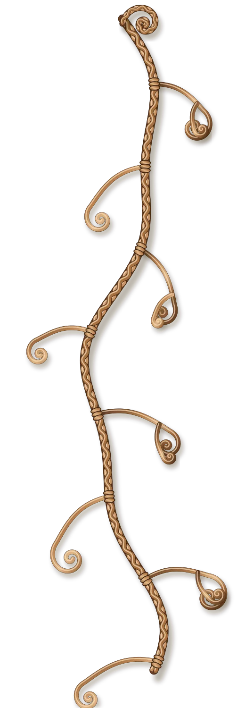
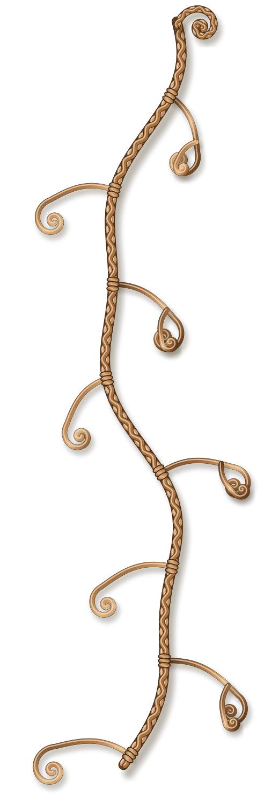
Ręcznie skręcana miedź · Polska pracownia
Miedź, która ma charakter.
Ręcznie skręcane bransolety z miedzi, łączone z naturalnym kwarcem. Każda sztuka wykonana pojedynczo — nie ma dwóch takich samych.
MiedźKwarcRęczny splotRegulowany rozmiar
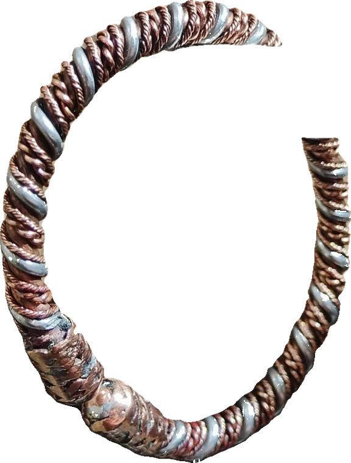
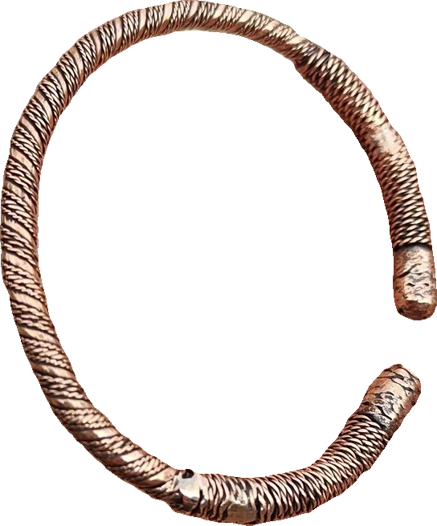
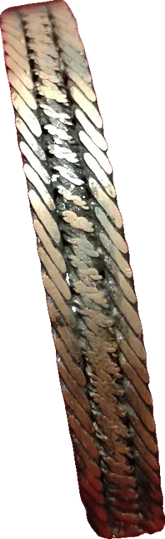
Nr 01 · 02 · 04dotknij, żeby zobaczyć z bliska
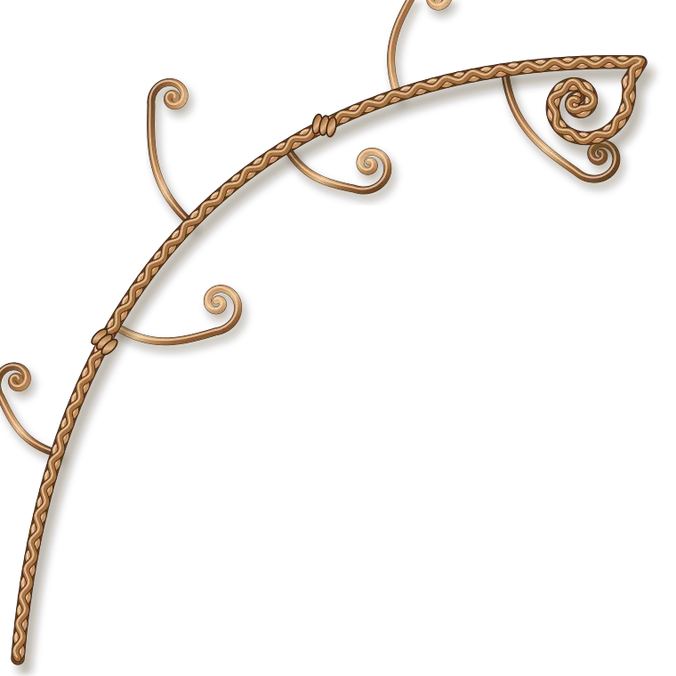
Kolekcja
Każda bransoleta to jeden egzemplarz.
Nie nadajemy im nazw — każda ma numer i swoją historię splotu. Regulowane, jeden rozmiar dopasowuje się do nadgarstka. Najedź albo dotknij, żeby obejrzeć z bliska.
dwa drutyskręcana
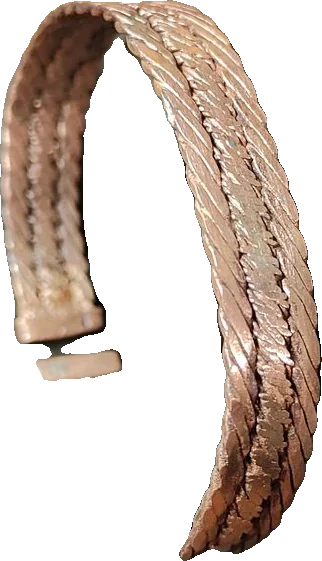
szerokaplecione druty
plecionkawąska
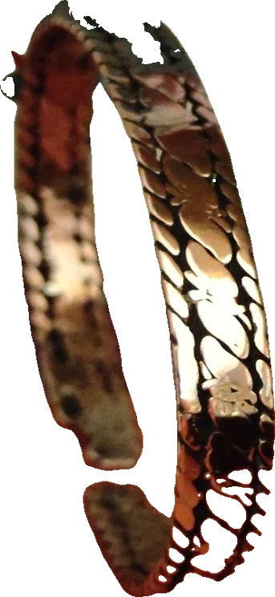
szerokawzór łusek
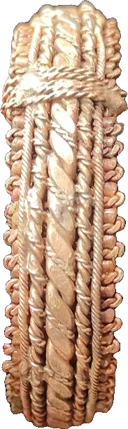
oplotwiązana
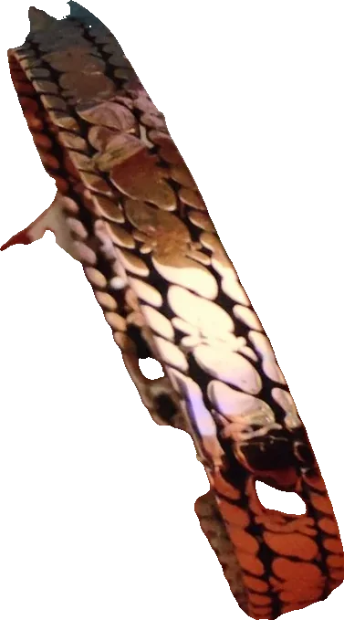
szerokałuski
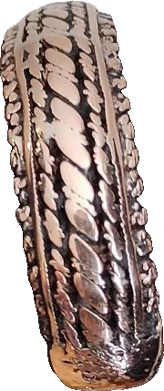
szerokawzór ogniw
Pracownia
Prosto z pracowni.
Tak powstają i tak wyglądają na co dzień — bez retuszu. Kliknij zdjęcie, żeby je powiększyć, albo zobacz pełną galerię i nagrania z pracy.
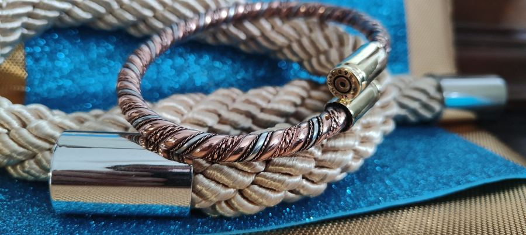
NA SZNURZE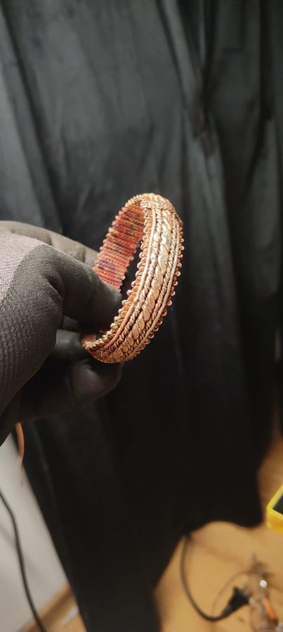
W RĘKAWICY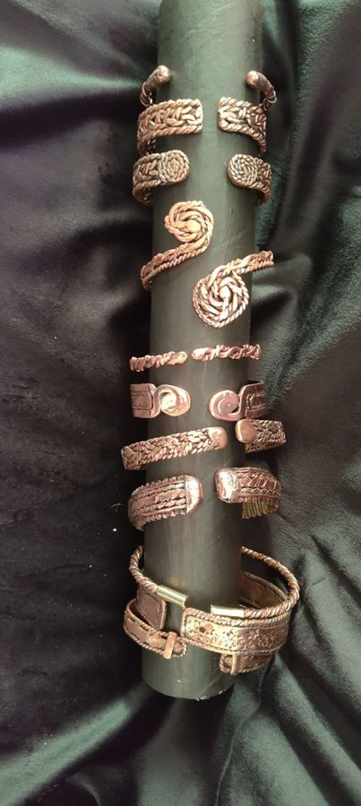
KOLEKCJA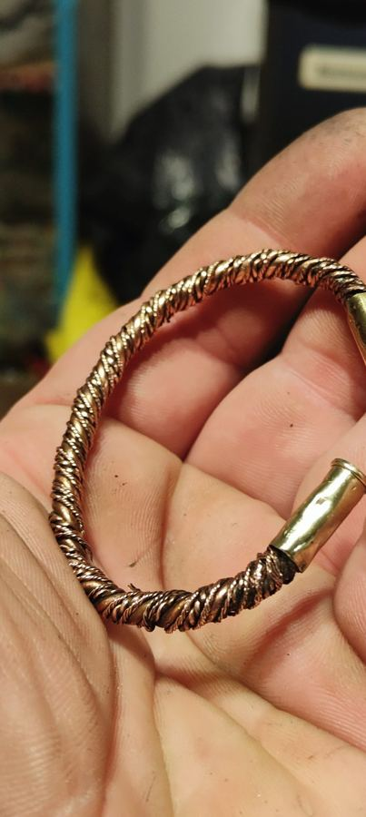
W DŁONI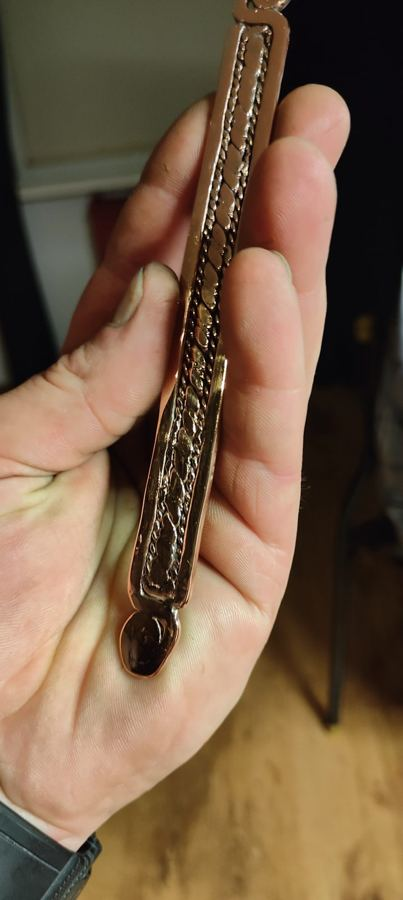
PRZED WYGIĘCIEM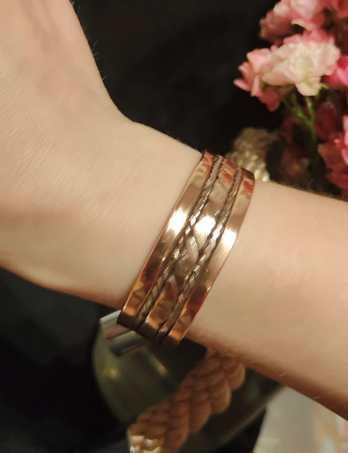
NA NADGARSTKUJak powstaje
Od surowego drutu do aury.
01
Skręcanie
Druty miedzi skręcamy ręcznie w splot — każdy splot wychodzi trochę inaczej.
02
Kształt
Formujemy bransoletę i jej końcówki, tak żeby dała się dopasować do nadgarstka.
03
Wykończenie
Polerujemy, a w wybranych modelach osadzamy naturalny kwarc.
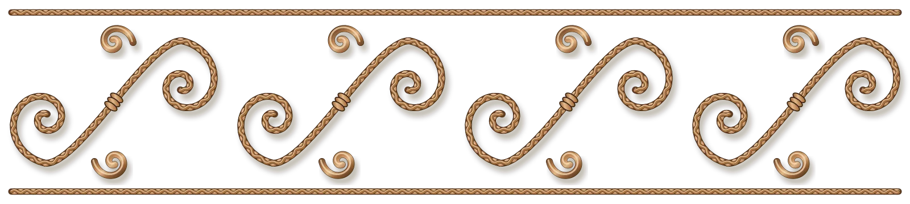
O miedzi
Metal, który nosi się z historią.
Miedź towarzyszy człowiekowi od tysięcy lat — od narzędzi po biżuterię noszoną jako talizman. W tradycjach ludowych i wierzeniach wielu kultur przypisywano jej właściwości ochronne i harmonizujące, symbol ciepła, energii i witalności słońca.
Nasze bransolety skręcamy ręcznie z surowej miedzi — z czasem metal naturalnie patynuje się, co część osób traktuje jako część rytuału noszenia takiej biżuterii.
Powyższe odnosi się do tradycyjnych wierzeń i symboliki, nie do właściwości leczniczych ani medycznych — nasze wyroby to biżuteria, nie produkt medyczny.
O kwarcu
Kamień jasności, oprawiony w miedź.
Kwarc to jeden z najstarszych kamieni używanych w rękodziele i symbolice duchowej — w wielu tradycjach uznawany za kamień jasności umysłu i równowagi, często łączony z miedzią jako „przewodnikiem” energii.
W naszych wybranych modelach osadzamy naturalne kryształy kwarcu — każdy nieco inny, bo taka jest natura tego kamienia.
Opis ma charakter symboliczny i tradycyjny, nie stanowi obietnicy działania zdrowotnego.
Kontakt
Wybierz numer. Resztę dobierzemy razem.
Podoba Ci się któraś bransoleta? Napisz jej numer — dobierzemy rozmiar i wykończenie.
kontakt@miedzianaaura.pl ↗